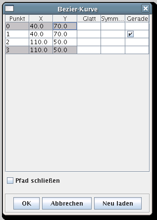

Wenn Sie ein Objekt zum Bearbeiten ausgewählt haben, können Sie mit der Taste F2 ein Pop-up-Fenster öffnen, das die Koordinaten des Objektes anzeigt (das geht gleichermaßen durch Anklicken mit der der Maus-Taste 3 und Auswählen des Menüpunktes „Geometrische Eigenschaften…”); das Fenster hat beispielsweise das folgende Aussehen:

Durch Anklicken eines Feldes kann die jeweilige Koordinate nun direkt und auf den hundertstel mm genau eingegeben werden (auch eine höhere Genauigkeit ist denkbar, sollte aber im Regelfall überfüssig sein)
Das Häkchen in der rechten Spalte besagt, dass hier eine Strecke
vorliegt, deren Endpunkte durch die dunkler hinterlegten Felder definiert
sind. Sollen also die Endpunkte der Strecke geändert werden,
dürfen nur diese Felder bearbeitet werden.
Werden hingegen die
hell hinterlegten Felder bearbeitet, wird automatisch aus der Strecke eine
Bezier-Kurve (das Häkchen verschwindet) mit den
in Bezier Kurven und glatte Polynome genannten
Eigenschaften.